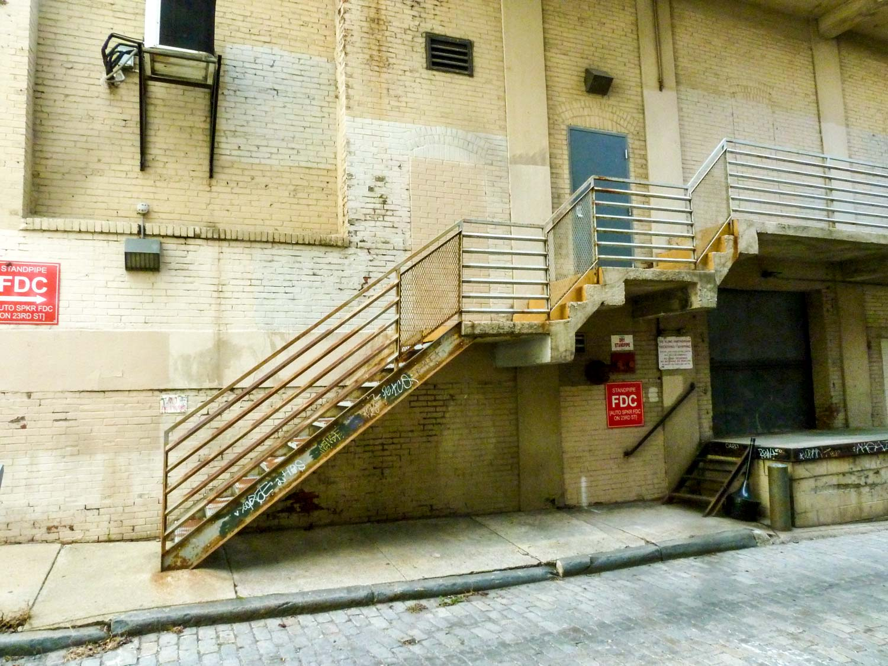
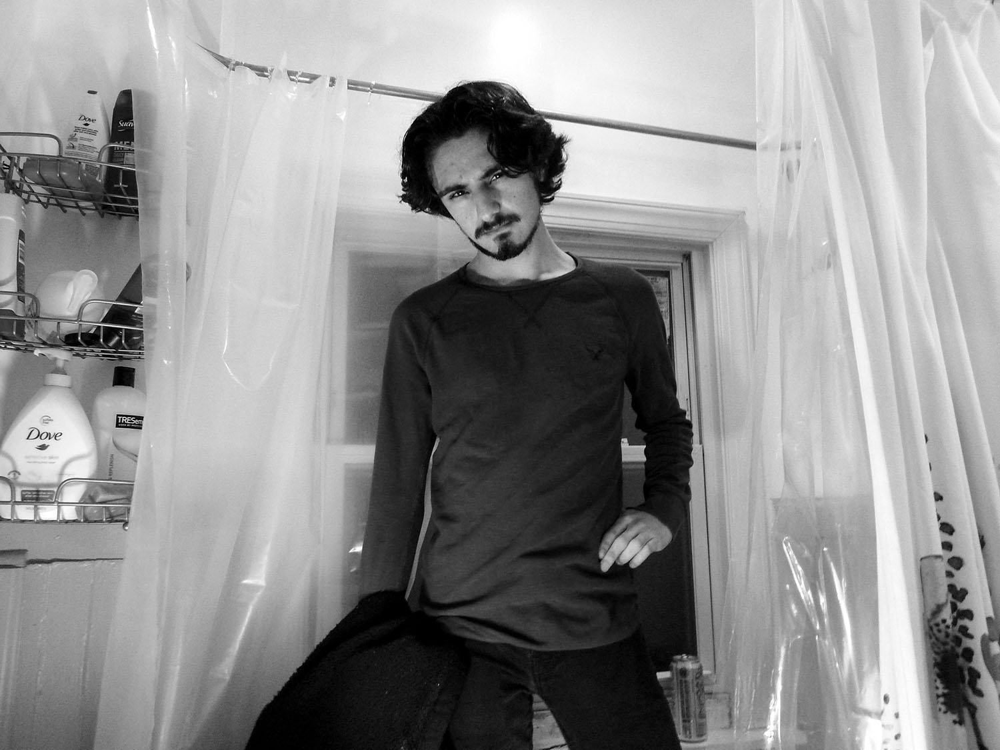
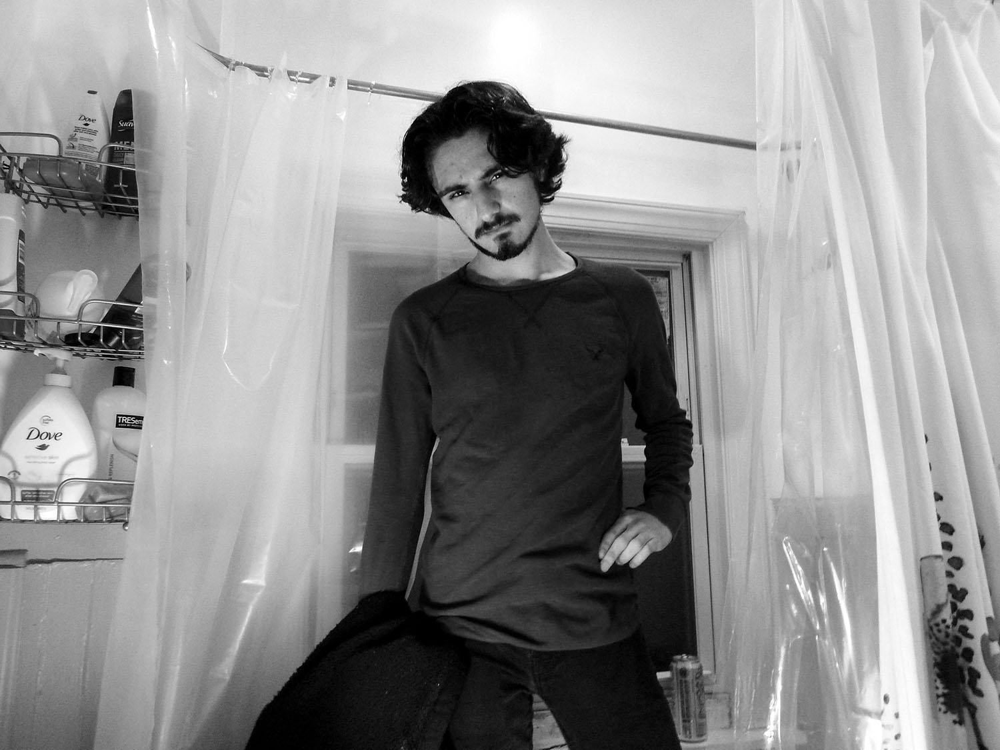

I've been interested in photography for as long as I can remember, but I never had the chance to get into it until recently. I love photography because it allows me to capture the moments that I love and hold them in time forever.
My favorite thing to take pictures of is people. I love capturing genuine emotions and expressions, and honestly just having fun with the camera.
Volume and Scale
In this project I was trying to capture volume within a photograph, part of what I wanted to do was frame the photos in such a way that they felt like they had more volume, or less volume than they actually did, making a 3D space seem flat.
Street Photography
Taking pictures of people isn't always easy. I wanted to capture different slices of life in Philadelphia for my Street Photography project, and to do that I had to take pictures of people without them knowing. It was uncomfortable at times, but I enjoyed the way that some of the photos came out.

Portraits in the Bathtub
I've always enjoyed taking pictures of my friends, and this project was no exception to that. I had the idea of putting a few people, fully clothed, in my bathtub, and just talking with them and taking pictures of them. This was the result of that project.
 
